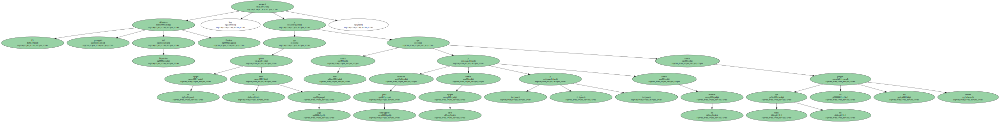
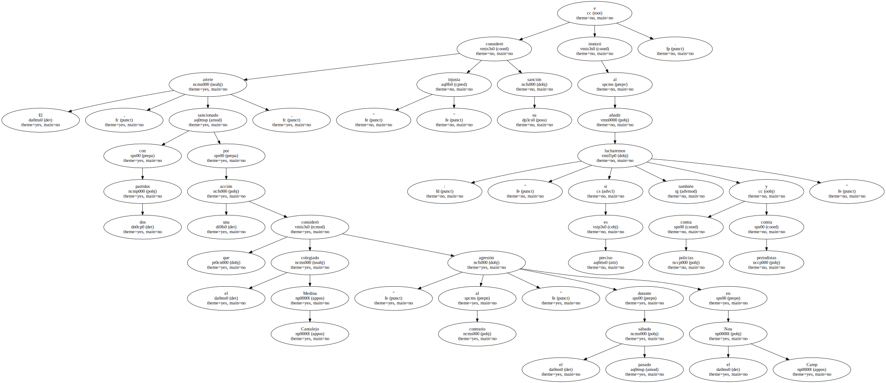
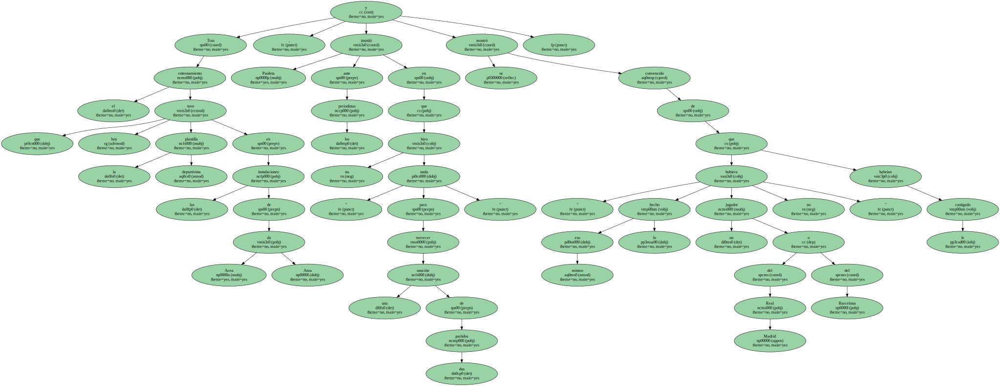
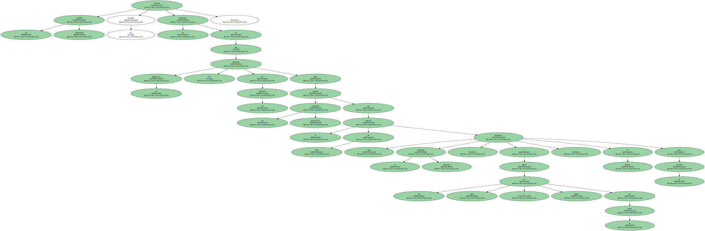
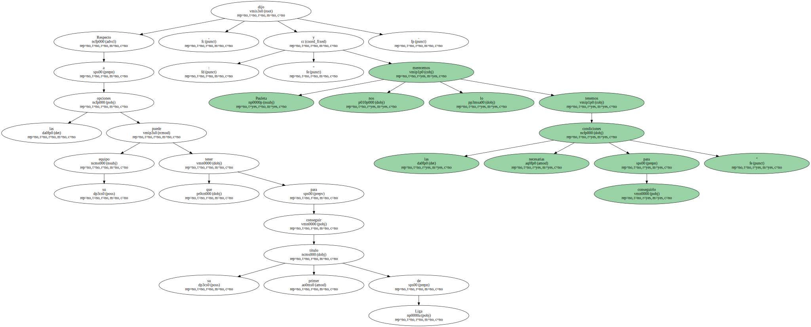
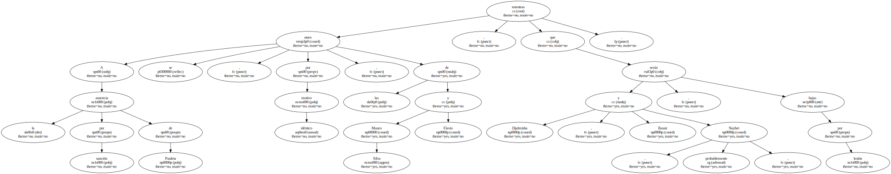

El delantero portugués del Deportivo Pauleta aseguró hoy que su equipo quiere el título de Liga y que para conseguirlo lucharán " contra todo y contra todos los que se nos pongan delante , contra otros equipos y contra los árbitros ".
El ariete , sancionado con dos partidos por una acción que el colegiado Medina Cantalejo consideró " agresión al contrario " durante el pasado sábado en el Nou Camp , consideró " injusta " su sanción e ironizó al añadir : " si es preciso lucharemos también contra policías y contra periodistas ".
Tras el entrenamiento que hoy tuvo la plantilla deportivista en las instalaciones de Acea da Ama , Pauleta insistió ante los periodistas en que no hizo " nada para merecer una sanción de dos partidos " y se mostró convencido de que eso mismo " lo hubiera hecho un jugador del Real Madrid o del Barcelona no le habrían castigado ".
El jugador portugués expresó no obstante su confianza en que el Deportivo no precisará de sus servicios para obtener un resultado satisfactorio en el partido de Liga que el próximo domingo , a partir de las siete y media de la tarde , disputará en Riazor ante el Oviedo.
Respecto a las opciones que su equipo puede tener para conseguir su primer título de Liga , Pauleta dijo : " nos lo merecemos y tenemos las condiciones necesarias para conseguirlo ".
El técnico del Deportivo , Javier Irureta , deberá afrontar el partido del próximo domingo con importantes bajas.

A la ausencia por sanción de Pauleta se unen , por idéntico motivo , las de Mauro Silva y Flavio , mientras que Djalminha , Bassir y , probablemente , Naybet , serán bajas por lesión.
